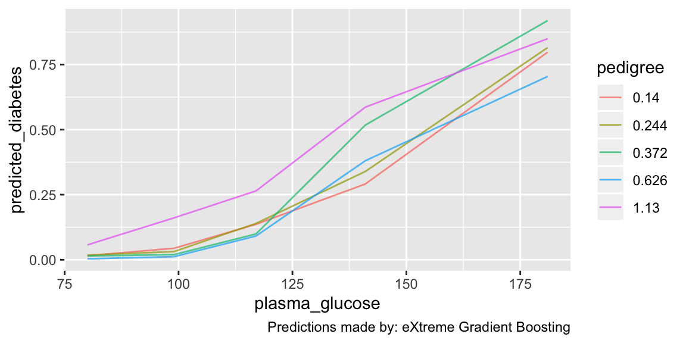

Explore a model's "reasoning" via counterfactual predictions
explore.RdMake predictions for observations that vary over features of interest. There are two major use cases for this function. One is to understand how the model responds to features, not just individually but over combinations of features (i.e. interaction effects). The other is to explore how an individual prediction would vary if feature values were different. Note, however, that this function does not establish causality and the latter use case should be deployed judiciously.
explore(models, vary = 4, hold = list(numerics = median, characters = Mode), numerics = c(0.05, 0.25, 0.5, 0.75, 0.95), characters = 5)
Arguments
| models | A model_list object. The data the model was trained on must
have been prepared, either by training with |
|---|---|
| vary | Which (or how many) features to vary? Default is 4; if
|
| hold | How to choose the values of features not being varied? To make
counterfactual predictions for a particular patient, this can be a row of
the training data frame (or a one-row data frame containing values for all
of the non-varying features). Alternatively, this can be functions to
determine the values of non-varying features, in which case it must be a
length-2 list with names "numerics" and "characters", each being a function
to determine the values of non-varying features of that data type. The
default is |
| numerics | How to determine values of numeric features being varied? By
default, the 5th, 25th, 50th (median), 75th, and 95th percentile values
from the training dataset will be used. To specify evenly spaced quantiles,
starting with the 5th and ending with the 95th, pass an integer to this
argument. To specify which quantiles to use, pass a numeric vector in [0,
1] to this argument, e.g. |
| characters | Integer. For categorical variables being varied, how many values to use? Values are used from most- to least-common; default is 5. |
Value
A tibble with values of features used to make predictions and
predictions. Has class explore_df and attribute vi giving
information about the varying features.
Details
If vary is an integer, the most important features are
determined by get_variable_importance, unless glm is the only
model present, in which case interpret is used with a
warning. When selecting the most important features to vary, for
categorical features the sum of feature importance of all the levels as
dummies is used.
See also
Examples
# First, we need a model on which to make counterfactual predictions set.seed(5176) m <- machine_learn(pima_diabetes, patient_id, outcome = diabetes, tune = FALSE, models = "xgb")#>#>#> #>#> #> #>#>#> #> #># By default, the four most important features are varied, with numeric # features taking their 5, 25, 50, 75, and 95 percentile values, and # categoricals taking their five most common values. Others features are # held at their median and modal values for numeric and categorical features, # respectively. This can provide insight into how the model responds to # different features explore(m)#> # A tibble: 625 x 9 #> predicted_diabe… plasma_glucose pedigree age diastolic_bp pregnancies #> * <dbl> <dbl> <dbl> <dbl> <dbl> <dbl> #> 1 0.0253 80 0.140 21 52 3 #> 2 0.0504 99 0.140 21 52 3 #> 3 0.177 117 0.140 21 52 3 #> 4 0.693 141 0.140 21 52 3 #> 5 0.894 181 0.140 21 52 3 #> 6 0.0230 80 0.244 21 52 3 #> 7 0.0541 99 0.244 21 52 3 #> 8 0.178 117 0.244 21 52 3 #> 9 0.669 141 0.244 21 52 3 #> 10 0.898 181 0.244 21 52 3 #> # ... with 615 more rows, and 3 more variables: skinfold <dbl>, insulin <dbl>, #> # weight_class <chr># It is easy to plot counterfactual predictions. By default, only the two most # important features are plotted over; see `?plot.explore_df` for # customization options explore(m) %>% plot()#># You can specify which features vary and what values they take in a variety of # ways. For example, you could vary only "weight_class" and "plasma_glucose" explore(m, vary = c("weight_class", "plasma_glucose"))#> # A tibble: 25 x 9 #> predicted_diabe… weight_class plasma_glucose pregnancies diastolic_bp #> * <dbl> <chr> <dbl> <dbl> <dbl> #> 1 0.00944 obese 80 3 72 #> 2 0.00906 overweight 80 3 72 #> 3 0.00216 normal 80 3 72 #> 4 0.00906 morbidly ob… 80 3 72 #> 5 0.00906 <NA> 80 3 72 #> 6 0.100 obese 99 3 72 #> 7 0.0766 overweight 99 3 72 #> 8 0.0146 normal 99 3 72 #> 9 0.0766 morbidly ob… 99 3 72 #> 10 0.0766 <NA> 99 3 72 #> # ... with 15 more rows, and 4 more variables: skinfold <dbl>, insulin <dbl>, #> # pedigree <dbl>, age <dbl># You can also control what values non-varying features take. # For example, if you want to simulate alternative scenarios for patient 321 patient321 <- dplyr::filter(pima_diabetes, patient_id == 321) patient321#> # A tibble: 1 x 10 #> patient_id pregnancies plasma_glucose diastolic_bp skinfold insulin #> <int> <int> <int> <int> <int> <int> #> 1 321 4 129 60 12 231 #> # ... with 4 more variables: weight_class <chr>, pedigree <dbl>, age <int>, #> # diabetes <chr>explore(m, hold = patient321)#> # A tibble: 625 x 9 #> predicted_diabe… plasma_glucose pedigree age diastolic_bp pregnancies #> * <dbl> <dbl> <dbl> <dbl> <dbl> <int> #> 1 0.00463 80 0.140 21 52 4 #> 2 0.00694 99 0.140 21 52 4 #> 3 0.00557 117 0.140 21 52 4 #> 4 0.0140 141 0.140 21 52 4 #> 5 0.245 181 0.140 21 52 4 #> 6 0.00690 80 0.244 21 52 4 #> 7 0.0123 99 0.244 21 52 4 #> 8 0.00922 117 0.244 21 52 4 #> 9 0.0182 141 0.244 21 52 4 #> 10 0.225 181 0.244 21 52 4 #> # ... with 615 more rows, and 3 more variables: skinfold <int>, insulin <int>, #> # weight_class <chr># Here is an example in which both the varying and non-varying feature values # are explicitly specified. explore(m, vary = list(weight_class = c("normal", "overweight", "obese"), plasma_glucose = seq(60, 200, 10)), hold = list(pregnancies = 2, pedigree = .5, age = 25, insulin = NA, skinfold = NA, diastolic_bp = 85)) %>% plot()